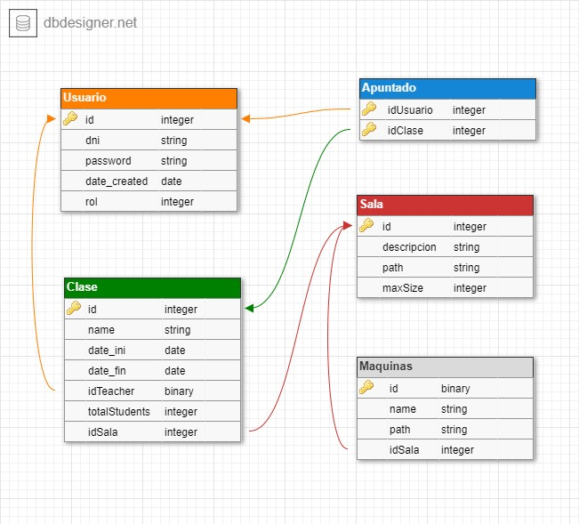

AlmaGym
Cosas a cambiar
-
Este html debería seguir el formato visto en la plantilla. En particular,
debe repetir lo que hace la aplicación, con enlaces a las principales páginas (
asumiendo que está corriendo, del tipo localhost:8080/patatas)
1h
-
Teneis pruebas internas, pero no externas (que automaticen un navegador de verdad, tipo chrome o firefox).
La idea es probar una historia: un usuario que entra en la aplicación y se apunta a dos clases, y las ve en su horario, por ejemplo.
3h
-
No teneis mensajes funcionando. Posibilidades: uno a uno (pestaña de mensajes y reinventar whatsapp pero sin grupos),
y uno a muchos (poder hablar con toda una clase)
- para montar mensajes, necesario saber quién es quién y poder enviar mensajes a un username (y no por id)
- panel lateral con destinatarios + busqueda por nombre, eliges destinatario o añades vía búsqueda
- una vez elegido destinatario, se cargan últimos mensajes con ese destinatario, y ya puedes enviar nuevos
4h
-
Faltan los horarios, que mostrarían para cada sala, qué clases tienen lugar en ella.
- si eres capaz de encontrar el formato para RealCalendar o similar, es cuestión de montar un JSON con eventos
- eventos se cargan por consulta con BD
2h
-
Falta poder apuntarse a las clases. Usuarios no-profe entran y se apuntan, y luego pueden ver sus clases en *su* horario
- método del controlador sencillo. Puntos si evitais conflictos de horario. Ejemplo: https://github.com/manuel-freire/plan/blob/master/web/js/plan.js
1h
-
Hasta aquí, un MVP (minimum viable product) - lo más pequeño que puede decirse que funciona.
-
Que admin pueda customizar el inicio, y el aspecto de la página:
- logo se pueda subir por admin
- texto de entrada, y foto de portada, puedan subirse vía formulario
- (mira como funciona el texto #{} de thymeleaf: Messages_en / _es .properties)
- color de barra de arriba
2h
-
Que admin pueda borrar mensajes reportados; y que los usuarios puedan reportar mensajes.
- sencillo: un Usuario que reporta en un Mensaje.
- complicado: N usuarios pueden reportar un Mensaje, con una nueva relación N a N (muchos usuarios reportan muchos mensajes)
1h (fácil) 2h (si N a N)
y/o
Que los usuarios se puedan bloquear unos a otros, y que no se pueda enviar mensajes a alguien que te ha bloqueado.
-
Que profe pueda subir fotos a su grupo.
- subida de fotos a data/lesson/id, y que se muestren en una galería asociada a la lección.
- data = application.properties :: es.ucm.fdi.iw.localStorage
2h (sin ponerlo bonito)
